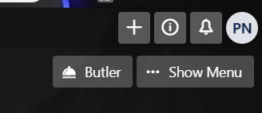
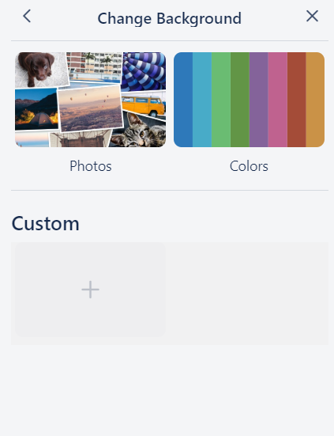
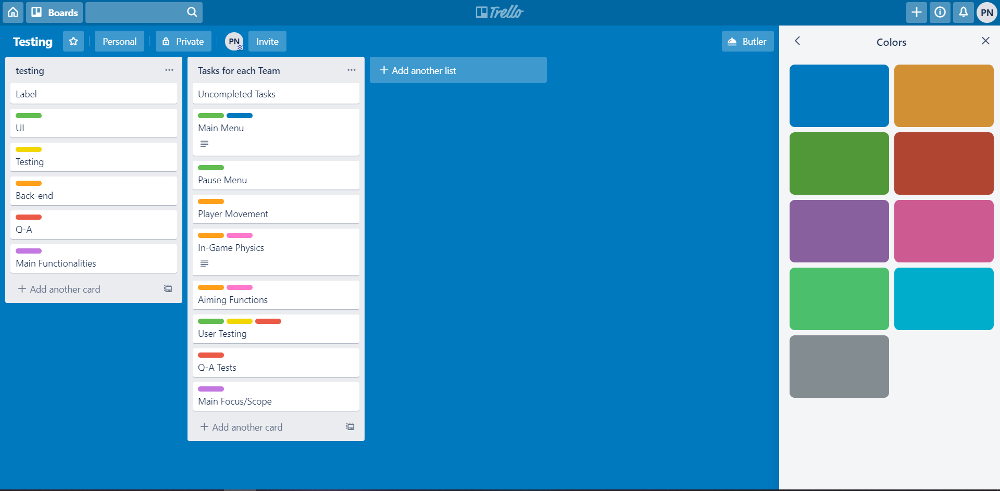

How to change the background for a already created board
Being able to change the background of your board can help with visual
oranization, changing the background to something related to what the board is about is
benefical to all those currently in the board.
Right under your account button, you can find a show menu button, This will be
found in the upper right hand corner of the screen. click it to open up another
window for more options (Figure 1).
Figure 1: Show Menu

Once you have clicked it, this will bring up the menu window for the board you
are in. Find the change background option within the menu's window. This should
be the second option within this window.
After clicking that option you can select from a collection of photos trello
has access for using unsplash images, unsplash images is a copyright free
website that allows you to search for pictures that you can use without the
worry of paying for the rights to use them. You can even select from a
collection of solid colors or you can upload your own custom image from your
compter if you wish (Figure 2).
Figure 2: Picking Type of Image

for example if you want to change the background of your board to a solid blue
color. select the colors option, find the color blue and click it, after doing
so you should see the update choice in the background of your board (Figure
3).
Figure 3: Blue Background on Board

Now you are done you can change the background whenever you please.